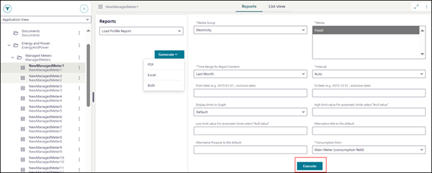

Execute Advanced Report
- You want to execute an advanced report in PDF, Excel, or Both formats.
- System Browser is in Application View.
- In Application View, select the System Browser object on which a web application rule is configured.
For example, select System Browser object ManagedMeters > NewManagedMeter1 on which [Load Profile Report] web application rule is configured. - The Reports tab displays.
- From the Reports drop-down list, select the web application rule, for example, the [Load Profile Report] rule.
- Select Generate and then select one of the following formats:
- Excel
- Both
- In the parameter information section fill in the parameter values for advanced report execution.
- The parameter values change depending on their value type and the selected web application rule from the Reports drop-down list.
- For some of the report parameters (such as Time Range for Report Content Interval, Display limits in Graph, and Consumption From) their default values are auto-filled.
- The fields that are marked with (*) are mandatory and without selecting or not entering these mandatory field values, the Execute button is not enabled.
- If the advanced report design includes the use of cascading parameters (that is, one drop-down list value gets filtered on the selection of the parameter value in the other drop-down list) and there are any issues with the selection of the cascading parameters, then contact your company's librarian.
- Select Execute.
- Advanced reports get executed and a preview of the advanced report displays in the preview area.
- By default, the advanced report is saved at the location: [Installation Drive C]:\[Installation Folder]\[Project Name]\ FlexReports.
- For the [Load Profile Report], the parameter information section can be seen in the image, and for the complete description of these [Load Profile Report] parameters, see Advanced Reports Execution and Parameter Information Workspace.
